UX Project: PlayDate
A Matchmaking App for Families
Overview
PlayDate is a start-up company looking launch a matchmaking mobile app. Their approach is unique, however, as they are not trying to match people up for romantic dating like most matchmaking services. PlayDate seeks to connect moms. In this way, moms of children of any age can find other moms with similar interests to schedule family outings and hopefully build lasting friendships.
his report includes extensive research into information I’ve gathered to help Play Date launch a successful online presence. This project includes includes:
- Business Goals
- Competitive Research
- User Personas
- User Surveys and Interviews
- UI Requirements
- Wireframes
- Usability Testing
- Key Findings
- Mockups
Research Phase
During the research phase, information was collected about both the company and the end-user. The importance of this phase is to know exactly who I was designing for. Through competitor research, user interviews, and user surveys, I was able to come up with an accurate archetype of who the app should be designed for. Design choices such as color palette, layout and screen flow, app features, and other options all are affected by an understanding of the audience.
Research Goals
The main goal of the research phase is to determine what would motivate a mom to use a service like Play Date and what features would she find most useful.
By the end of the research phase, there should be a strong understanding of who the target audience is for Play Date, what would cause her to sign up, what would keep her from signing up, and how PlayDate could best satisfy her online experience.
Research Methodology
Competitor Analysis - A Competitor Analysis will be performed on other matchmaking sites to see what types of features are available to the user, how privacy and security is handled, as well as looking at the costs for the services.
Surveys - In order to quickly gather data, electronic surveys will be written and disseminated to find out mom and dad’s interests, motivations, and fears for signing up for PlayDate.
Interviews - In the last step of the research phase, Interviews will be conducted to better understand the features mom and dad would be interested in and how the site would best appeal to them.
Business Goals
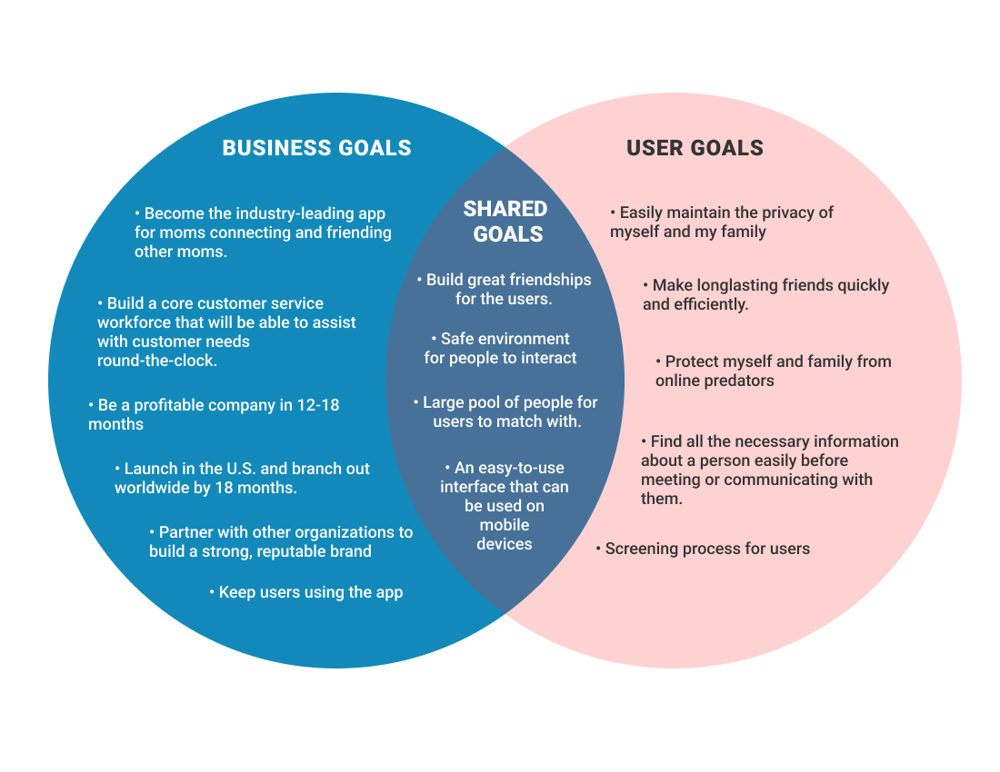
As part of the research process, goals for the company as well as user goals were created. The most important thing throughout this process was understanding how these both could be met, and where their needs aligned. Safety of the user became the top priority for both the user and the company.
Competitor Analysis
Play Date’s concept has yet to gain traction in the mainstream. While there are many successful online dating sites, as well as social media networks, there has not been an app that has achieved Play Date’s goals.
An essential part of the research process was to research similar apps and websites and investigate the features being offered to the consumer. From there, Play Date can capitalize on what’s working as well as find areas that are lacking .
After getting a broad sense of the features and competition, a feature matrix report was compiled.
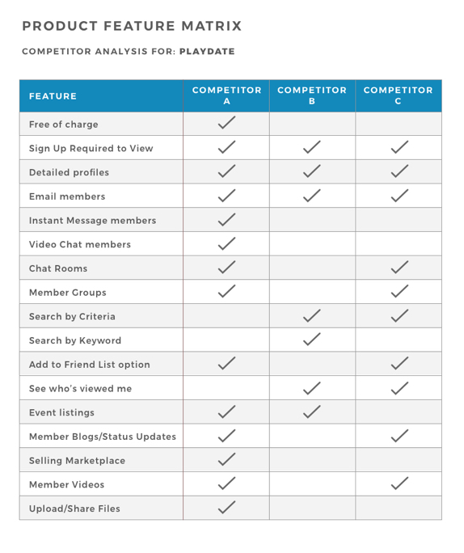User Interviews
In order to better understand the end user and their needs, user interviews and surveys were conducted. The topics for these included online habits, social life, online social activity, and demographics.
This research was used to find out answers to the following questions:
- What would motivate a mom to sign up for Play Date?
- What type of barriers would cause a mom not to want to try out PlayDate?
- What type of features would be most useful for PlayDate to succeed?
- Should PlayDate be a matchmaking site only or also include information, articles, forums, etc?
- How might PlayDate ensure the safety and privacy of the user?
- Should it be a free or paid service?
- Where are the most effective channels and mediums for advertising?
Below is a sample of the user interview script
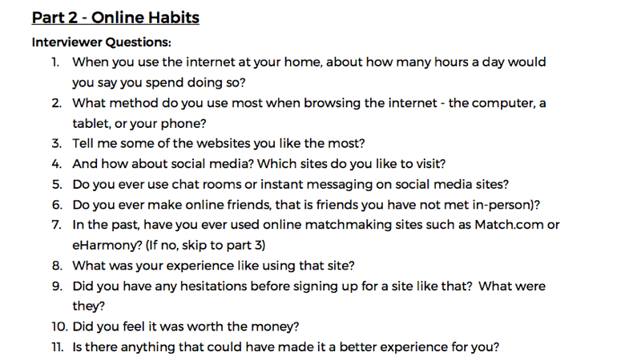
Surveys
Surveys were conducted along with interviews to gain a better understanding of the consumer. The surveys were built using Google Forms, and then disseminated to the particpants. All surveys were done anonymously and data was collected in spreadsheet format.
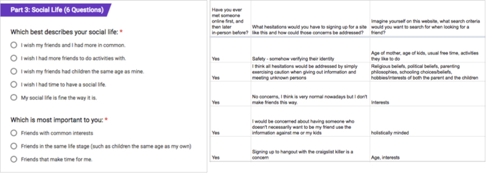
User Personas
User Personas were created from the user interviews and surveys. The brand and app itself is geared towards moms, so women of age were surveyed and interviewed for this project. From there, I was able to determine key traits about the moms and what the targeted persona should look like.
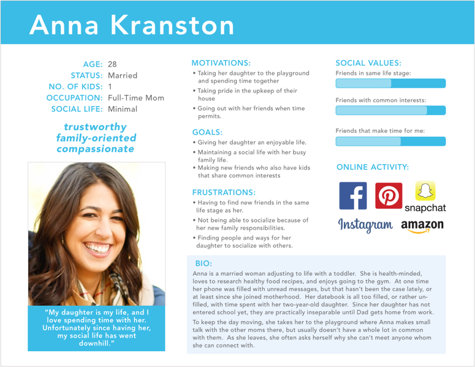
Empathy Mapping
One important part of building a defined user audience is creating emapthy maps. Empathy maps allow us to get inside the head of the user and understand what their day to day life is like.
For this specific example, I created an empathy map for the day in the life of the mom targeted in our persona.
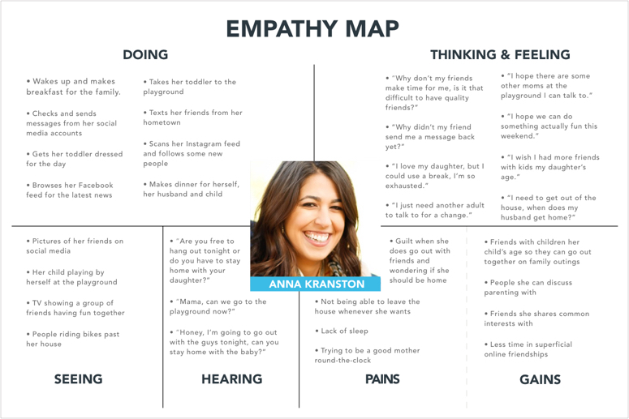
UI Requirements
After the user research part was getting close to finalized, UI requirements were written up. The purposes of UI Requirements is to understand what the critical tasks are and to determine the pages that are needed to accomplish the task. UI Requirements act as a blueprint and help to remember to include all pages in the design. For this project, I looked at the following tasks:
- User opens app and wants to connect with people
- User logs in and wants to search other users.
- User wishes to contact another user.
- User wishes to edit their profile.
- User wishes to edit their privacy settings.
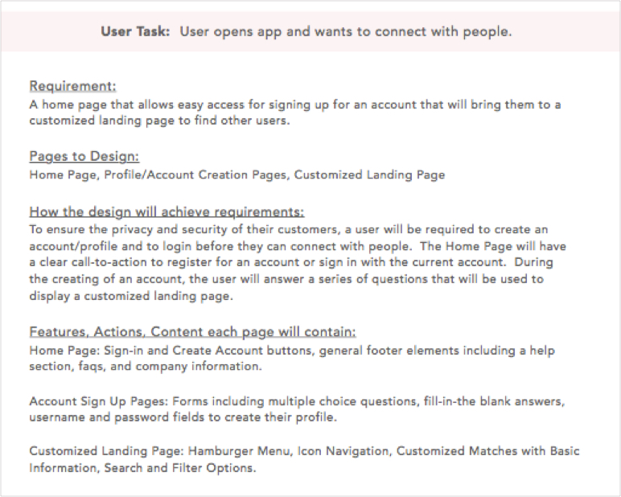
Wireframes
Based off of all the previous research and UI Requirements, wireframes were then constructed. Information gathered from the user research helped determine key screens needed to produce an optimal user experience. For this project, wireframes were only created for mobile devices as the product delivery is solely intended for that platform.
The following pages were created for usability testing:
- Onboarding
- Homepage
- Messaging
- Edit Profile
- View Profile
- Profile Settings
- Event Listings
- Notifications
- Search Users
- Contact Users
- View Friends
- Account Settings
Wireframes
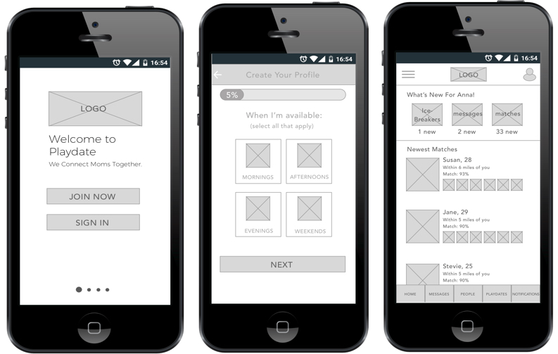
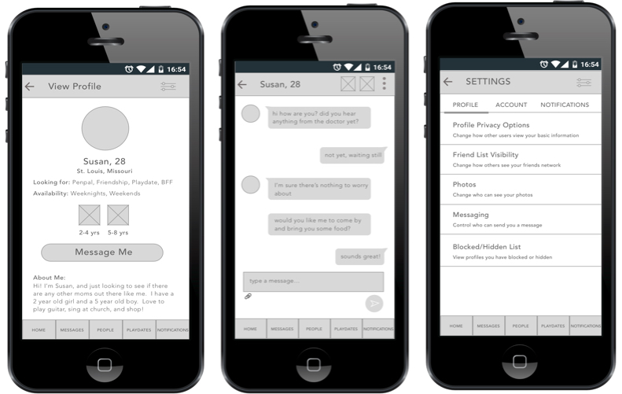
Application Map
Typically, I would create a site map for designs that I'm working on for the web. This project, however, is an app, so the user navigate a little differently than on a typical website. Once the wireframes were created, an application map was developed. The Application Map shows the flow the user could take on any given screen.
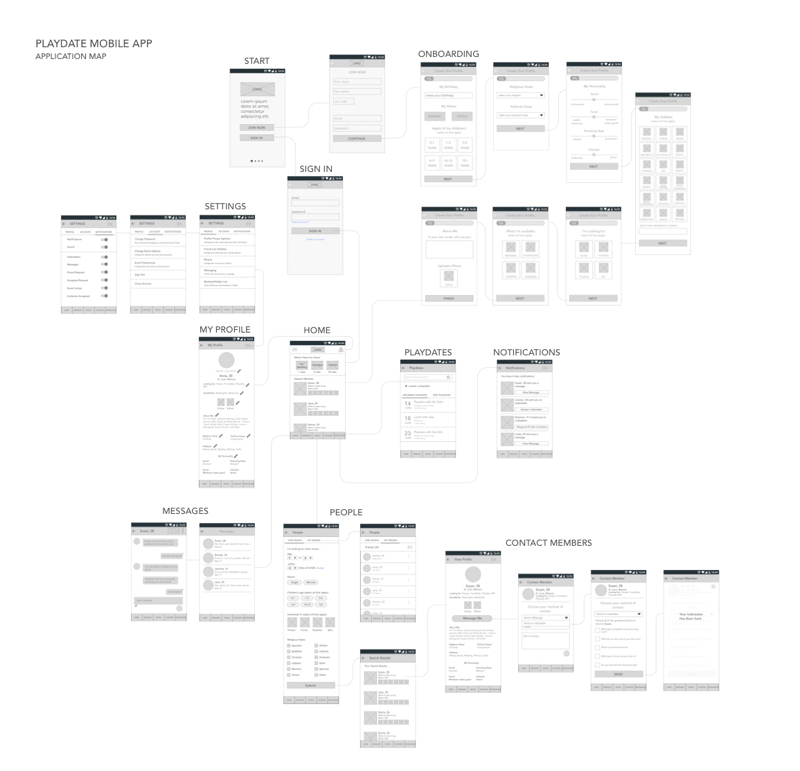
Task Flows
Visualizing the tasks the user would take and how they would flow from one section of the site to another was important.
The most important part of the app is finding other users and sending and communicating with them. The next page shows the user flow created for this task.
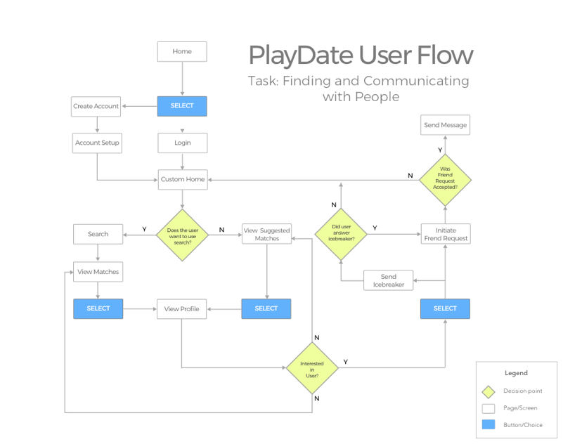
Usability Testing
Interactive prototypes were created in InVision. A detailed Usability Testing Plan was constructed and participants were recruited.
As part of the testing plan, users were asked to complete various tasks while observations were noted. Tasks included:
- After signing in to the app, how would you find other married moms with a child under the age of 1?
- After seeing the results for married moms with children under the age of 1, how would you find out the parenting style of the user: Susan, 28?
- You decided you want to change the privacy settings on your profile, where would you go to do this?
Key Findings
Finally, all the data from the usability testing was aggregated and analyzed and conclusions were made. User recommendations were noted and areas to fix and improve were made.
One area users had difficulty with was finding the “icebreaker” feature on the app. This feature was tucked away in a drop down menu. A later iteration removed this from the dropdown menu and made it more visible to the end user.
Overall, there was a high success rate with all of the tasks. Minor changes were made to the wireframes in preparation for the high fidelity mockup phase.
Logo and Icon Creation
Once the research and wireframing phase was completed, I focused on logo by exploring different typography and icons.
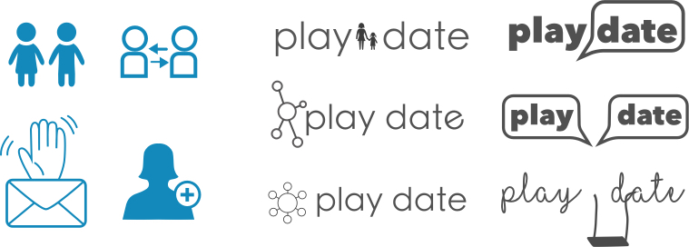
Style Tile
After choosing and refining the logo, an overall look and feel of the app was explored. For this, a style tile was created. The purpose of the style tile was to give the client a feel for how the app will be designed before all the work goes into the actual mockups.
There was a lot of work that went into the style tile. This included finalizing the logo and choosing the color palette, as well as creating icons for navigatio n, comparing color schemes, choosing fonts, and looking at imagery.
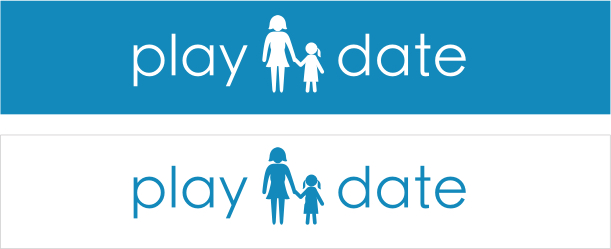
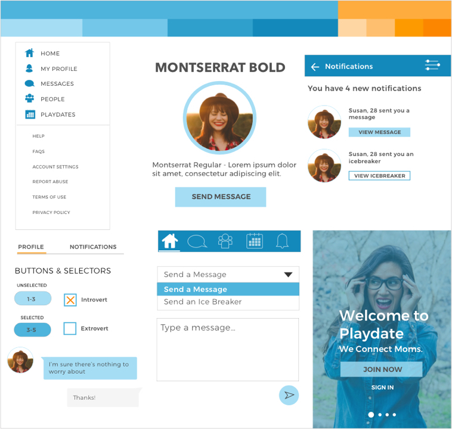
High Fidelity Mockups
The last part of the project was finalizing the mockups and creating a UI Kit. The mockups were created in Sketch and the Style Tile and wireframes were used as a guide in building them.


UI Kit
Finally, a UI Kit for the app was created. The UI Kit is a blueprint for the developers to know exactly what colors, font sizes, etc. are used throughout the app.
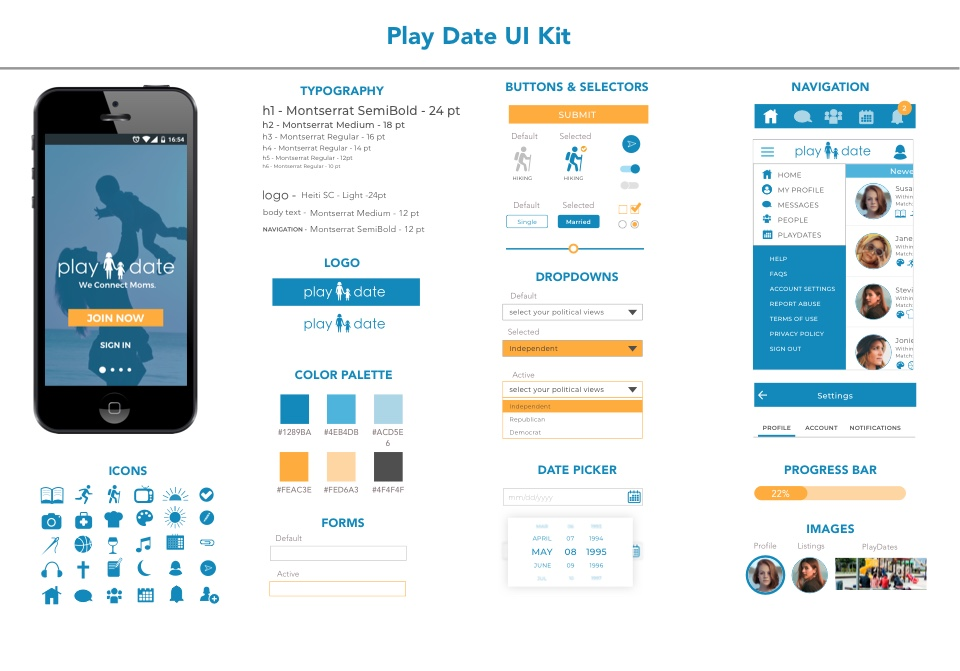
Next Steps
This project was completed for the app, but the probable next step would be to determine what the web presence for this company should be. Should there be a complete web experience similar to the app or should there just be a brand page with a description of the product and a link to download the app? This will need to be determined through user research, company goals, and company budget.
Obviously without a strong population of people using this app, the design will fail. So for this particular app, a strategic effort will be need to be put into place to try to figure out how to gain users and app downloads for this product.
Conclusion
The user research on this project became the driving force to make a successful design. Understanding who the user was and how the user would interact helped make design choices.
To go along with that, user feedback should be continually sought after including customer support issues and app reviews. This will help determine how to improve design choices and also what features should be added and removed in the future.